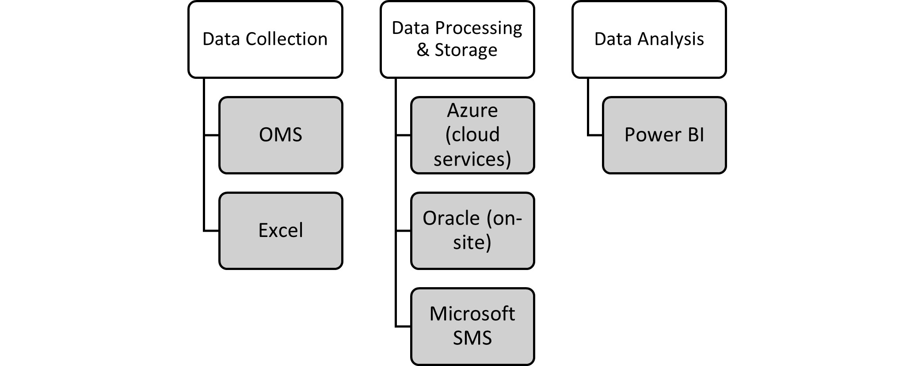
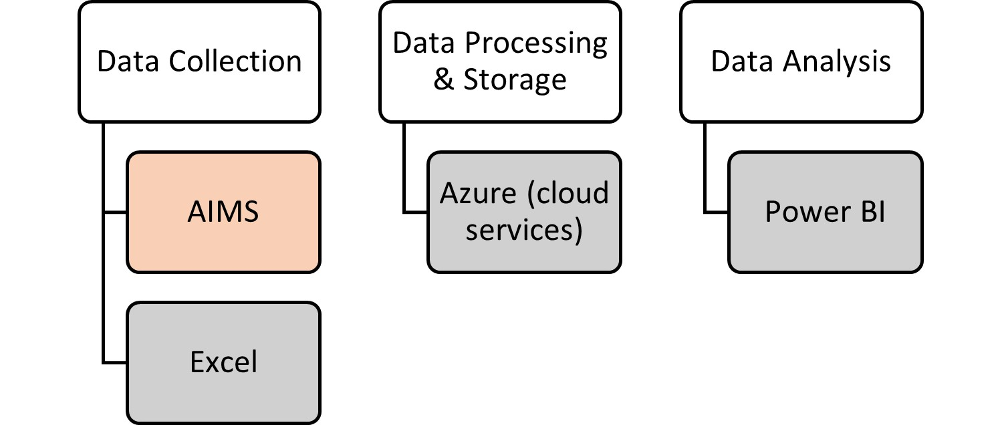
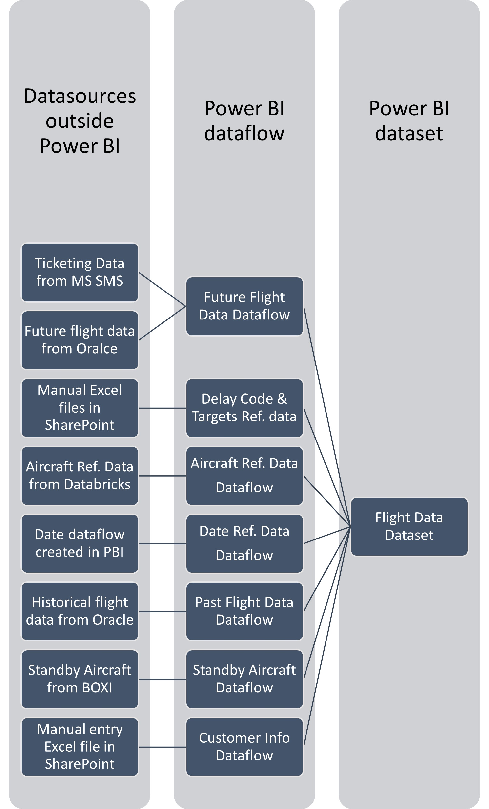
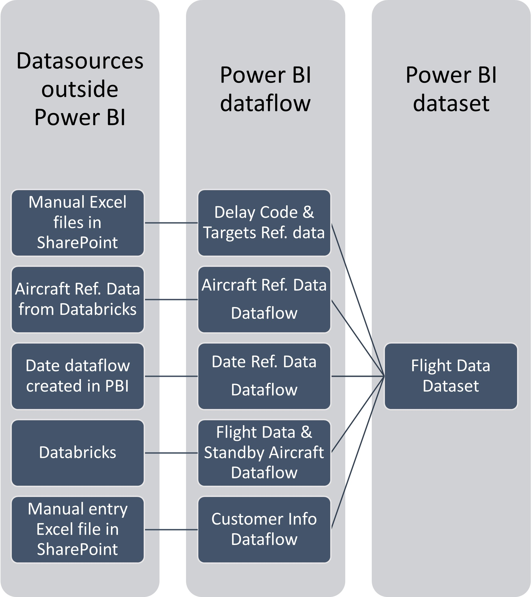
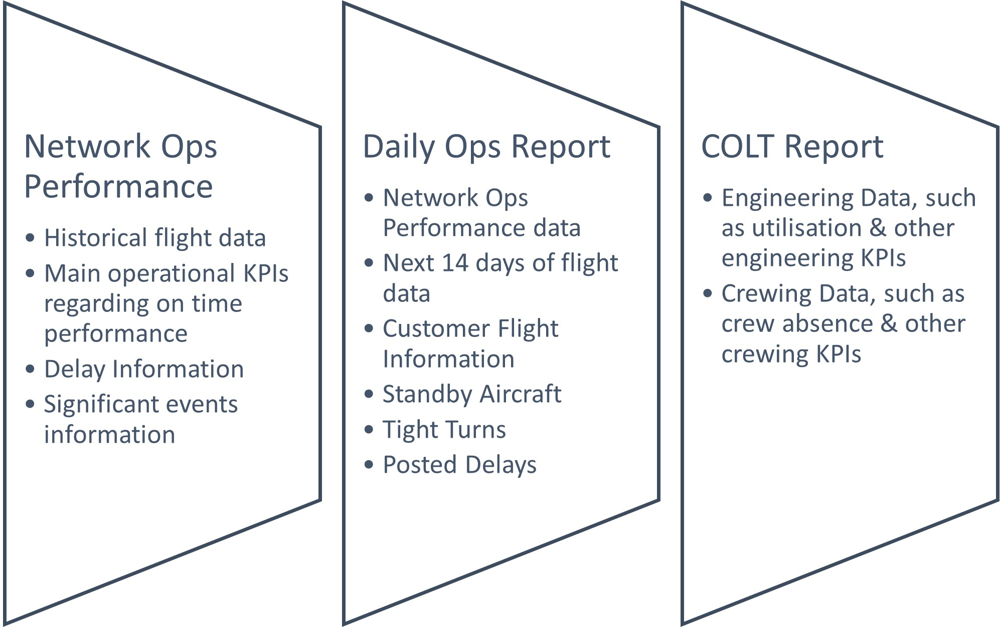
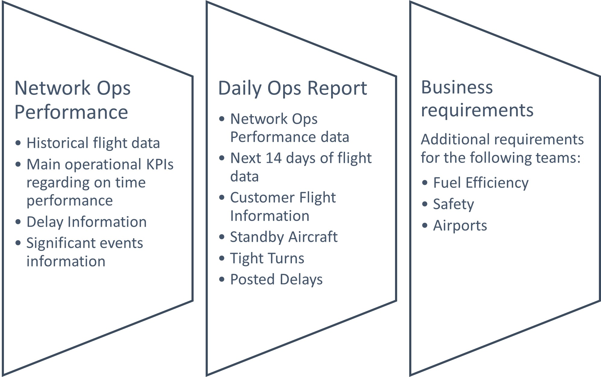

Impact Assessment
An overview of the Flight Data project at my workplace and its impact.
Wordcount: 1273
Executive Summary
After various organisational changes within Virgin Atlantic and due to onboarding a new operations management system it became apparent that the various departments used various sources for flight data for reporting & analytical purposes. This made the onboarding process of the new system much more difficult, while also caused multiplications in data, and often slowed down the service as well.
The solution was to create a centralised dataset for flight data, which then could be used around the business, so instead of the various departments create their own ETL process, there would be one, slightly bigger one that is managed centrally. For the onboarding process it also consolidated all required fields from all the sources, therefore allowing the team working on the onboarding project to know which fields are required, as some sources contained a lot of unused columns. On the other side, the centralised dataset was built to a higher standard in order to achieve the certified mark – the only currently available, governable promotion within the Power BI platform (Garcia, A. J. 2020).
And not only the ETL process was consolidated in this step, but the calculation of Key Performance Indicators were also centralised. Due to using various sources, the results were not always the same between two departments, but sometimes it was the calculations and definitions that were not aligned. Nonetheless, they are now all contained in the certified dataset.
Project Background
Data Infrastructure and Tools
The new operations management system meant that the previously used key tools used in the ETL process would change within the organisation, not just for the data collection phase, but for the data processing & storage phase, as the company is looking to use more cloud base services than the previous on premises servers.
Figure 1. - The software & tools used in the different stages of flight data processing with OMS (Fejes, A. 2023)
Figure 2. - The software & tools used in the different stages of flight data processing with AIMS
The only part of the process that remains in use is the Power BI service used for reporting and analysis. In the recent months a large scale remediation project was conducted to strengthen the service. This involved various tasks, including creating process and procedures for requesting new gateway connectors and new workspaces, and cleaning up orphaned workspaces and artefacts. This caused better engagement with the business about Power BI in general, further increasing its popularity (Fejes, A. 2023), although there are some traces of Tableau and Qlik dashboards certain areas, they are set to be converted to Power BI as well.
Figure 3. - Data Sources in the Flight Data dataset – OMS version
Figure 4. - Data Sources in the Flight Data dataset – AIMS version
Data Engineering
The project itself is mainly Data Engineering focused, merely impacting other parts of the learning curriculum. It is an ETL process in itself – Extracting data from sources, with Transformation done in multiple levels, both in the query, dataflow and dataset, depending on business needs and Load the data into Power BI and make it accessible for other parts of the businessThe project itself is mainly Data Engineering focused, merely impacting other parts of the learning curriculum. It is an ETL process in itself – Extracting data from sources, with Transformation done in multiple levels, both in the query, dataflow and dataset, depending on business needs and Load the data into Power BI and make it accessible for other parts of the business.
To achieve a quick and seamless transition from the combined data sources (Databricks, Oracle and MS SMS) to Databricks only, the flight data dataset was set up to be fed by dataflows only, rather than connecting to the data sources directly within the model. This allows the dataset to refresh with any available data, regardless whether the dataflows have failed to refresh or not, and this allows each dataflow to be reviewed one by one and switched over one by one.
The weeks following the switchover each dataflow was repointed to cloud service, and re-released to the business, although there are some hiccups as expected in such a large scale project, the data is much more reliable. Notwithstanding that the previous system had a “lag” of minimum of 2 hours (often more than that) to retrieve the data from the source – it is available in Databricks within 15 minutes. This allows Power BI reports to be much more close to real time reporting.
Data Visualisation and Dashboards
This project has had a major impact on dashboards, especially in the Operations area, including the Daily Ops Report rework (Fejes, A. 2023). This allowed the Daily Ops report to be based on a composite model, rather than its own with two major benefits: because it sped up the performance of Daily Ops Report and COLT report, but because it was using the single source of truth, the Key Performance Indicators always match.
Data Analytics
Although the project itself does not focus on analytics, it is a milestone to any analytics project that would require operational data. At the moment there are less analytical projects running than data engineering focused ones. However, once the onboarding project is closed, there are a few non operational projects that are more analytical.
Project Approach
The project had three stages, because there were three key performance reports that consolidated all the required information: Network Ops Performance, Daily Ops Report and COLT Report.
Figure 5. - Initial Project Approach
Network Ops Performance was the initial layer, as it contained very basic flight information from the past and used the performance indicators solely calculated by using flight data, delay information and significant events information. Most of this information was available, and the main changes at this stage were mostly related to best practices.
Daily Ops Report then added and additional layer – it did contain further passenger information from the past, however these were reported on local dates, whereas general reporting was required in UTC. It also required future flight information, such as future flights, posted delays, tight turns, and future standby aircraft availability and future passenger connections within the Operational Window.
COLT Report was meant to be the final layer – however, the during the process composite models have been enabled, and COLT was broken down into other datasets rather than extending the Flight Data dataset. Instead, the previous version was released to the business for their requirements, and the dataset was extended to Speed Up information, Operated Airline information, and included Index and LastIndex columns for finding the previous flights, as the Airports team review the turns between the flights for example. At this stage a few more improvements were completed as well – due to the past and future flight data was coming from different sources, they were initially represented as separate tables, but they have been integrated and further best practices have been applied.
Figure 6. - Final Project Approach
Results & Future Recommendations
The results are very hard to measure in this case, as the goal was to reduce multiplication of data across various departments on the Power BI platform. The number of datasets for example reduced, but that is also due to other initiatives to mature the Power BI usage within the business, the remediation project, while composite models also count as new datasets in this metric – however in the last two months the dataset reusability have improved by around 20%.
The onboarding process of AIMS is still in progress, however the switchover happened on the 27th of July. Albeit most of the flight data is available from the new system, there are certain datapoints that are still outstanding, for example the number of infants per cabin class as they treated very differently, since they do not need their own seats. But having a centralised dataset made the process much more seamless, than other areas where there were no such things, for example crew sickness data. Some previous problems, such as too many one-to-one relationships that were slowing down the reporting have been resolved during this phase, however the repointing has caused new teething problems instead, which are expected at this stage – the onboarding project is far from being completed.
References
Fejes, A. (2023) Data Infrastructure & Tools within Virgin Atlantic. Data Infrastructure & Tools. BPP. Unpublished assignment.
Fejes, A. (2023) Data Visualisation – Daily Operations Report. Data Visualization & Dashboards. BPP. Unpublished assignment.
Garcia, A. J. (2020) Power BI Dataset Certification – Delivering Value to The Organisation Via Improving High Quality Data Sources Visibility. [Online] Available at: https://smartpowerbi.co.uk/2020/11/03/power-bi-dataset-certification-delivering-value-to-the-organisation-via-improving-high-quality-data-sources-visibility/ [Accessed 4 September 2023]